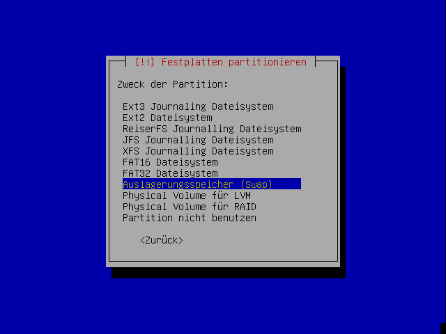

Xubuntu Installation
Archivierte Anleitung
Dieser Artikel wurde archiviert, da er - oder Teile daraus - nur noch unter einer älteren Ubuntu-Version nutzbar ist. Diese Anleitung wird vom Wiki-Team weder auf Richtigkeit überprüft noch anderweitig gepflegt. Zusätzlich wurde der Artikel für weitere Änderungen gesperrt.
Anmerkung: Der Support für Xubuntu betrug nur 3 Jahre und endete somit bereits im Frühjahr 2015.
Xubuntu ist eine Ubuntu-Variante mit der Desktop-Umgebung Xfce und einigen Standardanwendungen. Es wurde bei der Zusammenstellung dieser CD darauf Wert gelegt, dass diese Installation auch auf älteren Computern funktioniert. Daher beschreibt dieser Artikel die Installation mit Hilfe der "Alternate-CD" (nur bis Xubuntu 12.04 verfügbar). Im Gegensatz zur Desktop-CD gibt es hier eine Textinstallation, dafür hat man aber mehr Freiheiten, vor allem was die Partitionierung betrifft.
Wer die "Desktop-CD" von Xubuntu heruntergeladen hat, folgt der Installationsanleitung des Artikels Xubuntu Installation/Desktop-CD.
Vorbereitungen¶
Zuerst sollte die CD heruntergeladen werden. Auf dieser Seite im Wiki sind die Links und weitere Informationen zu den Rechner-Architekturen zu finden, nachdem man sich für die gewünschte Ubuntu-Version entschieden hat. Das heruntergeladene ISO-Abbild ist mit einem geeigneten Programm zu brennen, sofern man nicht einen USB-Stick einsetzen möchte.
Man sollte prüfen, ob das BIOS das Booten von optischen Datenträgern unterstützt und ob die Bootreihenfolge stimmt. Informationen zu diesem Schritt findet man auch in diesem PDF-Dokument  .
.
Booten¶
Nachdem von der CD gebootet wurde, erscheint dieser Splash-Screen:
Man kann aus diesen Optionen wählen:
| Optionen | |
| Menüpunkt | Beschreibung |
Install in textmode | Installiert ein komplettes System. Diese Option ist die Standard-Installations-Methode. |
Install in OEM Mode | Installation mit grafischer Oberfläche, aber ohne Konfiguration der Benutzereinstellungen, (siehe auch OEM-Installation) |
Install a server | Installiert eine minimale Version des Systems, bei der selbst noch zusätzliche Komponenten installiert werden können. |
Install an LTSP Server | installiert einen Terminal-Server. Diese Option ist zu wählen, wenn von einem Thin Client aus in diese Maschine gebootet werden soll. |
Check CD for defects | Überprüft, ob die CD funktionsfähig ist oder ob während des Herunterladens oder während des Brennvorgangs Fehler auftraten, die die CD unbrauchbar machen. |
Rescue a broken system | Damit kann man ein System retten, falls unerwarteterweise doch einmal ein vom System selbst aus irreparabler Fehler auftritt. |
Boot from first hard disk | Hier kann man von der ersten Festplatte booten. Dies ist nützlich, falls versehentlich einmal von der CD gebootet wurde, obwohl kein Anlass dazu besteht. |
Falls die Standardeinstellungen der Installation geändert werden müssen, (etwa die Sprache oder die Bildschirmeinstellungen), so kann dies durch Drücken der entsprechenden F-Tasten getan werden (das F-Tastenmenü am unteren Ende der Bildschirmausgabe beachten).
| Einstellungen | ||
| Taste | Auswahl | Beschreibung |
| F1 | Help | Zeigt den Hilfe-Index an |
| F2 | Language | Hier kann man die Installationssprache auswählen. Nach der Änderung ändert sich das grafische Installer-Menü auch auf diese ausgewählte Sprache. |
| F3 | Keymap | Hier lässt sich das Tastatur-Layout einstellen |
| F4 | VGA | Bildschirm-Auflösung |
| F5 | Accessibility | Barrierefreie Einstellungen |
| F6 | Other Options | Weitere Optionen. Hier kann man dem Kernel weitere Optionen mitgeben |
Sollten diese Optionen nicht ausreichen, kann man mit der ESC-Taste Esc das grafische Installer-Menü abbrechen und gelangt zu dem Textmodus-Installer. Dort kann man mit den F-Tasten weitere Optionen abfragen.
Sobald die Einstellungen den Bedürfnissen entsprechend konfiguriert sind, kann man durch Wählen der gewünschten Option mit der Installation fortfahren. Daraufhin wird der Installer starten und man sollte einige Textnachrichten für etwa zwei Sekunden aufleuchten sehen. Dann wird man auch schon vom Sprachenwählbildschirm begrüßt.
Die Sprache mit den Pfeiltasten auswählen und ⏎ drücken. Es ist der eigene Standort zu wählen.

Jetzt sollte das Keyboard-Layout (die Tastaturbelegung) ausgewählt werden; dabei ist zu bedenken, dass dies nicht unbedingt mit der gewählten Sprache übereinstimmen muss.
Netzwerk einrichten¶
Der Installer wird nun versuchen, die Hardware und die Netzwerkumgebung zu erkennen. Zuerst versucht der Installer das Netzwerk automatisch via DHCP zu konfigurieren. Schlägt dies fehl, zeigt der Installer einen Fehler an und lässt nach einem Klick auf "Weiter" mehrere Möglichkeiten der Konfiguration zu:
Autokonfiguration nochmals versuchen - Der Installer wird es mit denselben Einstellungen nochmals testen. Wenn man beispielsweise das Kabel einzustecken vergessen hat, wiederholt diese Auswahl einfach den vorigen Schritt.
Autokonfiguration mit einem DHCP-Rechnernamen - Der Installer fragt nach einem DHCP-Hostnamen. Dieser Schritt ist nur selten nötig. Nach der Eingabe wird er die DHCP-Konfiguration nochmalig durchführen.
Netzwerk manuell einrichten - Hier muss man diese Daten von Hand angeben:
| Netzwerk | |
| Element | Beschreibung |
| IP-Adresse | die IP Adresse des Computers (diese erfährt man von einem Netzwerkadministrator oder man benutzt einen privaten Adressbereich) |
| Netzmaske | der standardmäßig eingestellte Wert (255.255.255.0) stimmt in den meisten Fällen |
| Gateway | die Adresse des Standard-Gateways. Normalerweise die IP-Adresse des Routers/Servers. |
| DNS Server | das gleiche wie bei Gateway gilt auch für die IP-Adresse des Nameservers |
| Proxy-Server | die Adresse eines eventuell vorhandenen Proxy-Servers. Wenn kein Proxy-Server benutzt wird, ist dieses Feld bitte leer zu lassen. |
Netzwerk unkonfiguriert lassen - Es werden keine Einstellungen vorgenommen, das Netzwerk kann nach der Installation konfiguriert werden. Dies ist z.B. dann notwendig, wenn man keine feste IP von seinem Provider zugeteilt bekommt.
Computernamen - Über diesen Namen, den man frei wählen kann, ist der Computer über das Netzwerk erreichbar.
Falls man in ein neu aufgesetztes System die Einstellungen (/home) eines anderen Systems importieren will, sollte der/die Benutzername/n und UIDs mit dem anderen System übereinstimmen.
Partitionierung¶
Wenn der Partitionierer geladen wurde, erscheint ein Bildschirm mit drei Wahlmöglichkeiten:

Wer während der Installation ein Software-RAID mit LVM kombinieren möchte, der sollte die Anleitung im Artikel Software RAID mit LVM befolgen.
Gesamtes Laufwerk löschen¶
Dies ist die einfachste Möglichkeit, wenn man nur Ubuntu auf einem neuen Rechner installieren will oder für Ubuntu eine eigene Festplatte zur Verfügung hat. Alle vorhandenen Daten auf der Festplatte gehen verloren.
Der Ubuntu-Installer löscht das gesamte Laufwerk und teilt sich alle Partitionen selber ein. Diese Methode ist für Einsteiger sehr einfach und zu empfehlen, solange keine wichtigen Daten auf der Festplatte sind.
Wie diese Partitionierung aussieht, zeigt der Installer nach der Bestätigung an. Danach hat man noch die Möglichkeit zurückzukehren.
Gesamtes Laufwerk löschen und LVM verwenden¶
Macht das gleiche wie oben, verwendet aber LVM für die Verwaltung der Partitionen.
Auch hier wird der Installer noch eine Zusammenfassung anzeigen.
Partitionstabelle von Hand eingeben¶
Dies ist die empfohlene Methode für folgende Fälle:
Ubuntu soll zusätzlich zu bereits vorhandenen Betriebssystemen auf einer Festplatte installiert werden. Andere Systeme können dabei verkleinert werden.
Es wurden bereits Partitionen für Ubuntu vorbereitet.
Partitionen anderer Systeme sollen gezielt eingebunden werden. Ansonsten werden alle vorhandenen Partitionen automatisch unter /media eingebunden.
Einzelne Bereiche des Systems sollen auf eigene Partitionen ausgelagert werden. Siehe Partitionierung.
Größe bestehender Partitionen ändern¶
Auf dem folgenden Bildschirm werden alle gefundenen Festplatten mit ihren Partitionen aufgelistet. Mit den Pfeiltasten muss nun die richtige Partition ausgewählt werden.
Nach Druck auf die Eingabetaste kommt die folgende Auflistung der Eigenschaften der Partition. Hier muss die Zeile mit der Größe ausgewählt werden.
Wiederum weiter mit der Eingabetaste. Was jetzt kommt, ist verwirrend bis beängstigend, aber seltsamerweise richtig so.
"Ja" wählen und weiter mit der Eingabetaste. Noch wird natürlich gar nichts geschrieben. Jetzt wird erst einmal die gewünschte Größe abgefragt.

Hier den gewünschten Wert eintragen, weiter mit der Eingabetaste. Das war's auch schon - wirklich auf die Festplatte geschrieben werden die Änderungen erst ganz am Schluss der Partitionierung. Dateisysteme auf den Partitionen werden dabei durch die interne Verwendung des Volume-Management-Systems EVMS automatisch angepasst. Sollte dies nicht möglich sein, wird die Größenänderung verweigert. NTFS-Partitionen werden bei der Größenänderung so markiert, dass Windows beim nächsten Start automatisch eine Überprüfung durchführt - das ist kein Grund zur Beunruhigung.
Partitionen manuell erstellen oder einbinden¶
Anlegen einer neuen Partition¶
Wenn sich auf einer Festplatte genügend freier Platz befindet, kann dieser zum Anlegen neuer Partitionen genutzt werden.
Zuerst muss der freie Platz in der Übersicht ausgewählt werden:

Nach Druck auf die Eingabetaste erscheint die folgende Auswahl:

Mit der Eingabetaste bestätigt man hier die Vorauswahl "Eine neue Partition erstellen". Danach gibt man die Größe der neuen Partition ein:

Wiederum Bestätigung mit der Eingabetaste.
Als Typ der Partition kann meist "Logisch" gewählt werden, lediglich für die "Root-Partition" wird oft eine primäre Partition verwendet. Windows benötigt zum Booten eine primäre Partition, auch BSD-Systeme werden in primären Partitionen installiert, die dann weiter unterteilt werden. Wenn man gezwungen ist, alle primären Partitionen für andere Systeme zu verwenden, lässt sich Linux auch komplett in logischen Laufwerken installieren.

Wenn die neue Partition nicht den gesamten zusammenhängenden freien Platz belegt, kann man jetzt noch die Position festlegen:

Nun wird eine Übersicht der weiteren Eigenschaften der Partition angezeigt. Hier muss vor allem der Einhängepunkt ("mount point") für die Partition gewählt werden. Dies wird im übernächsten Abschnitt besprochen.
Einbindung bestehender Partitionen¶
Bestehende Partitionen können für das neue System verwendet werden. Dabei lassen sie sich formatieren oder mitsamt den enthaltenen Daten einbinden.
Dazu kann die bestehende Partition in der Übersicht (erste Abbildung auf dieser Seite) ausgewählt werden. Auf der nächsten Seite muss zunächst unter "Benutzen als" der verwendete Dateisystemtyp eingestellt werden. Ist der gewählte Typ mit dem bestehenden identisch, kann man wählen, ob man die existierenden Daten erhalten will:

Für die Einbindung bestehender Partitionen sollte ein Einhängepunkt angegeben werden. Bei FAT- oder NTFS-Partitionen sollten auch gleich die nötigen Optionen angegeben werden; Informationen dazu finden sich auf dieser Seite.
Sonst geht es weiter mit dem nächsten Abschnitt.
Einstellungen für neu angelegte oder zu formatierende Partitionen¶
Die folgende Übersicht enthält Einstellungen für eine neue oder bestehende Partition:

Als Dateisystem wird normalerweise ext3 oder ext4 verwendet.
Je nach Verwendungszweck der Partition muss der Einhängepunkt gewählt werden. Normalerweise wird je eine Partition für das Wurzeldateisystem ("root", /) und für die Benutzerdaten (/home) verwendet.

Die Verwendung als Auslagerungsspeicher (swap) wird über den Dateisystemtyp unter "Benutzen als" eingestellt:

Weitere Informationen zur sinnvollen Partitionierung und geeigneten Partitionsgrößen finden sich unter Partitionierung.
"Reservierte Blöcke" bezeichnen den Anteil am Speicherplatz, der für das System als Reserve gehalten werden soll. Normale Benutzer haben auf diesen Anteil keinen Zugriff. Während man hier bei allen Systempartitionen die Voreinstellung belassen sollte, kann man die Einstellung bei reinen Datenpartitionen verringern.
Sind alle Einstellungen gesetzt, wählt man "Anlegen der Partition beenden".
Partitionierung abschließen¶
Wenn alle Partitionen bearbeitet sind, kann man die Änderungen übernehmen:
Bevor die Änderungen tatsächlich geschrieben werden, bekommt man sie noch einmal gesammelt aufgelistet:

Wenn man hier mit "Ja" bestätigt, werden die Änderungen vorgenommen und die Installation fortgesetzt.
Benutzer anlegen¶
Im nächsten Schritt wird man gebeten, die Daten des ersten Benutzers im neuen System einzugeben. Diesem Benutzer werden auch Administratorrechte verliehen.
Installation des Grundsystems¶
Daraufhin beginnt der Installer mit der Installation des Grundsystems. Der größte Teil der Arbeit ist nun bereits erledigt, den Rest übernimmt der Installer.
Grafische Oberfläche einrichten¶
Der Installer bittet wieder um ein paar Eingaben. Es sollte die passende Auflösung angegeben werden, die von Bildschirm und Grafikkarte unterstützt wird. Diese Daten können aber später erneut eingestellt werden. Bei Unsicherheit kann auch einfach ⏎ gedrückt werden. Der Installer sollte in der Lage sein, die Hardware zu erkennen.
Installation beenden¶
Der Installer wird nun die Installation fertigstellen und einen Neustart des Computers verlangen.
Herzlichen Glückwunsch. Die Installation ist nun vollständig, und man sollte nun das neue System starten können.
Wie man Xubuntu einrichtet, kann man hier nachlesen.
Nach der Installation¶
Xubuntu ist zwar direkt nach der Installation bereits vielseitig verwendbar, aber aus verschiedenen Gründen muss an vielen Stellen oft nachgeholfen werden. Wie man am besten dabei vorgeht, wird in den ersten Schritten erklärt.
Problembehebung¶
Wenn die CD korrekt gebrannt wurde und beim Starten zumindest das CD-Menü korrekt erscheint, sich das System danach aber aufhängt oder die Installation fehlschlägt, findet man im Artikel Ubuntu-CD Problembehebung Lösungen.
Installation bricht nach Auswahl aller Parameter ab¶
Sollte die Installation nach Schritt 7 abbrechen, so kann das daran liegen, dass der Dateimanager Thunar die Festplatte noch eingebunden hat. Diese Bindung muss man manuell lösen. Dazu startet man über das  Anwendungsmenü ein Terminal und gibt dort folgenden Befehl ein, um Thunar zu beenden:
Anwendungsmenü ein Terminal und gibt dort folgenden Befehl ein, um Thunar zu beenden:
thunar -q
Anschließend hängt man die Festplatten mit folgendem Befehl aus:
umount /dev/sdaX
wobei X durch die korrekte Partitionsnummer ersetzt werden muss. Die Partitionsnummer entspricht der, die man beim Schritt "Partitionierung" angegeben bzw. ausgewählt hat. Verwendet man nicht die erste Festplatte sda, sondern z.B. die zweite, so ist sda durch sdb zu ersetzen. Weitere Informationen hierzu findet man im Artikel Datenträger
Anschließend kann man die Installation neu starten, und es sollte keine Probleme mehr geben.
- Erstellt mit Inyoka
-
 2004 – 2017 ubuntuusers.de • Einige Rechte vorbehalten
2004 – 2017 ubuntuusers.de • Einige Rechte vorbehalten
Lizenz • Kontakt • Datenschutz • Impressum • Serverstatus -
Serverhousing gespendet von